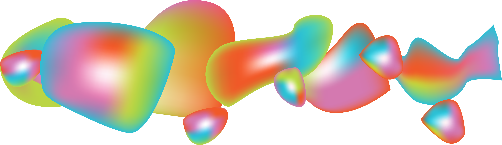

This site showcases in a virtual exhibition the projects created by the final year Bachelor of Design (BDes) students at the University of Waikato. Here you will find information about the students and the work they created for their final projects.
The projects cover a wide range of media including web design & production, mobile design, interactive design, brand development, interactive installation, motion graphics, 3D animation, and more!
The final year of the BDes provides an opportunity for students to plan, develop, and carry out a small scale design project with relative independence. Students are encouraged to collaborate with peers in the learning environment and with members of the professional design industry and/or academic community. Advisors and mentors work closely with students throughout the process to develop their ideas through the design process to a successful solution.
For more information about the degree you can visit www.waikato.ac.nz/go/bdes
For more information about the exhibition contact degreeshow@waikato.ac.nz